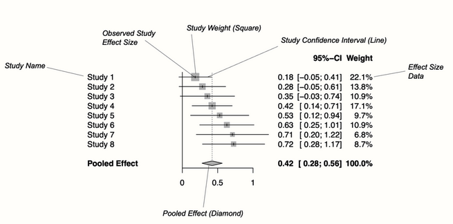
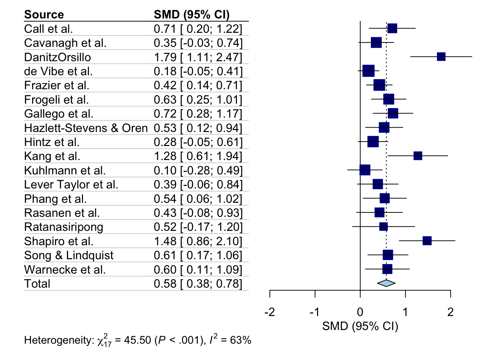

Het is gebruikelijk om de resultaten van meta-analyses te visualiseren door middel van forest plots. Forest plots zijn op te vatten als een grafische weergave van de effectgrootte en het betrouwbaarheidsinterval van individuele studies en tonen ook het berekende totale effect. Ze laten het geobserveerde effect zien, het betrouwbaarheidsinterval en de gewichtsverdeling van elke studie. Ze laten ook het gepoolde effect zien dat berekend is over de studies.
In het Voorbeeld van een forest plot hieronder geeft een ruit het gemiddelde effect weer. De lengte van de ruit symboliseert het betrouwbaarheidsinterval van het gepoolde resultaat op de x-as. Meestal bevat een forest plot ook een verticale referentielijn die het punt op de x-as aangeeft dat gelijk is aan geen effect. In forest plots kun je ook iets laten zien over de heterogenities (zoals \(I^2\) of \(\tau^2\) weer te geven.

Voorbeeld van een forest plot
Het is ook mogelijk om andere soorten informatie aan een forest plot toe te voegen, bijvoorbeeld de kwaliteitsbeoordeling die elke studie kreeg. Forest plots kunnen alleen resultaten weergeven die uitgaan van een vaste significantiedrempel, meestal \(p<0,05\). Om te visualiseren hoe resultaten veranderen bij verschillende significantiedrempels, kunnen daarnaast draperieplots worden gegenereerd.
6.2 Praktijk:
Het meta-pakket in R is een veelgebruikte tool voor het maken van forest plots. Het heeft veel functies en de opmaak van de plots kan worden aangepast aan de wensen van de gebruiker.
We beginnen met het databestand zoals eerder omhoog gehaald.
library(tidyverse) # voor databewerking
── Attaching core tidyverse packages ──────────────────────── tidyverse 2.0.0 ──
✔ dplyr 1.1.4 ✔ readr 2.1.5
✔ forcats 1.0.0 ✔ stringr 1.5.1
✔ ggplot2 3.4.4 ✔ tibble 3.2.1
✔ lubridate 1.9.3 ✔ tidyr 1.3.0
✔ purrr 1.0.2
── Conflicts ────────────────────────────────────────── tidyverse_conflicts() ──
✖ dplyr::filter() masks stats::filter()
✖ dplyr::lag() masks stats::lag()
ℹ Use the conflicted package (<http://conflicted.r-lib.org/>) to force all conflicts to become errors
library(dmetar) # voor de data
Extensive documentation for the dmetar package can be found at:
www.bookdown.org/MathiasHarrer/Doing_Meta_Analysis_in_R/
library(meta) # voor de meta-analyse
Loading 'meta' package (version 6.5-0).
Type 'help(meta)' for a brief overview.
Readers of 'Meta-Analysis with R (Use R!)' should install
older version of 'meta' package: https://tinyurl.com/dt4y5drs
We kunnen een forest plot maken voor elk type {meta} meta-analyse object (bijv. resultaten van metagen, metacont, of metabin) met behulp van de forest.meta-functie. We hoeven alleen maar forest.meta te voorzien van ons {meta} object en er wordt een plot gemaakt.
Er zijn allerlei argumenten in dit pakket om de forest plots verder aan te passen. Zo kunnen we de plot verbeteren door een kolom toe te voegen die het bias-risico van elke studie weergeeft. De dataset ThirdWave, die we gebruikten om m.gen te genereren, bevat een kolom met de naam RiskOfBias, waarin de beoordeling van het risico van vertekening van elke studie is opgeslagen.
We kunnen het argument leftcols gebruiken om de kolom aan de plot toe te voegen. Dit resulteert in de volgende code en de informatie van elke studie is toegevoegd.
Er zijn ook twee voorgeprogrammeerde lay-outs voor forest plots:die van JAMA en van Cochrane. We kunnen de lay-out van de plot aanpassen met behulp van de layout-functie. Hier bijvoorbeeld de JAMA-lay-out.
forest.meta(m.gen, layout ="JAMA")

Je kunt de forest plots op verschillende manieren opslaan (bijvoorbeeld PDF, PNG, SVG). Hier slaan we de JAMA forest plot op als een pdf in onze img-folder.